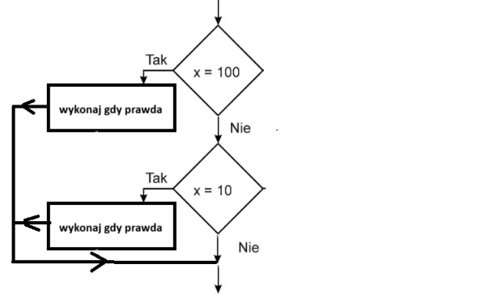
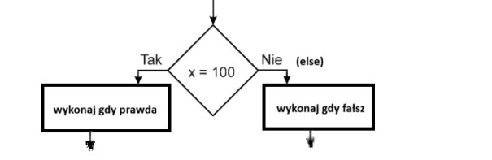

1) Instrukcja wyboru – składnia teoretyczna
2) Instrukcja wyboru – schemat blokowy

3) Instrukcja alternatywy – składnia teoretyczna
4) Instrukcja alternatywy – schemat blokowy

5) Operatory porównania
6) Uwaga do operatorów porównania
7) Operatory logiczne